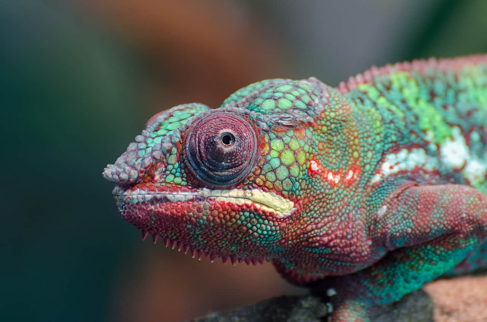

Mes centres d'intérêt
Art
Technologie
Cuisine
Culture G
Voyage
Ornithologie
Mes soft skills
Curiosité

Ouverture d'esprit
Rigueur

ESCAET - Aix-en-Provence | 2020 - Présent
Maîtrise du secteur touristique, ses acteurs, leurs outils, et du marketing
KOBE UNIVERSITY - Kobe, Japon | 2018 - 2019
Maîtrise du japonais et de l'anglais et découverte d'une culture étrangère.
UNIVERSITE DE LILLE | 2016 - 2020
Option Anglais Langue d'Appui
LYCEE INTERNATIONAL MONTEBELLO | 2016
Mention Très Bien
Option Anglais Euro, Latin, LV3 Japonais
ESCAET - Aix-en-Provence | Novembre 2021 - Mars 2022
Gestion de projet, outils de création de site web et application (Bubble)
GAY SEJOUR - Télétravail | Mai 2021 - Août 2022
Mise en place d'une planning de publication, création de contenu, newsletter
Maîtrise de WordPress
ESCAET - Aix-en-Provence | 2021
Gestion de la communication pour l'OT Menton, Rivierra et Merveille
Travail d'équipe, mise en place d'une stratégie de communication
ESCAET - Aix-en-Provence | Décembre 2020
Challenge consistant à concevoir un produit touristique d'aventure
et durable
Montage d'une vidéo promotionelle sur DaVinci Resolve 17
EN LIGNE | Août 2019 - Mars 2021
Etudiant en management de tourisme international, j'ai à cœur la promotion des territoires et de leurs activités via la technologie, la communication et le marketing.
Français (langue maternelle)
Anglais (B2)
Japonais (N3)

Ce site a été réalisé par Sam Fiévet dans le cadre de l'examen HTML & CSS.